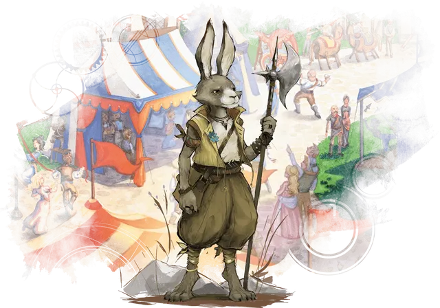

Зайцегон
Harengon

Зайцегоны родом из Страны фей, где они общаются на Сильване и воплощают дух свободы и путешествий. Со временем эти кролелюды перескочили в другие миры, принеся с собой богатство Страны фей и по ходу дела изучая новые языки.
Зайцегоны двуногие, с характерными кроличьими длинными ногами, на которых они и похожи, а так же мехом различных цветов. Они обладают острыми чувствами и мощными ногами зайцевых существ и наполнены энергией, как заведенная пружина. Зайцегоны наделены небольшой удачей, и им часто везёт оказаться в нескольких счастливых футах от опасностей во время приключений.
Особенности Зайцегона
У вас есть следующие расовые особенности.
Увеличение характеристик. Выберите одно из: (а) Значение одной характеристики по вашему выбору увеличивается на 2, а другой — на 1; (б) Значение трёх различных характеристик по вашему выбору увеличивается на 1.
Вид существа. Вы гуманоид.
Размер. Ваш размер — Средний или Маленький. Вы выбираете его при создании персонажа.
Скорость. Ваша базовая скорость ходьбы составляет 30 футов.
Заячье сердце. Вы можете добавить свой бонус мастерства к своему броску инициативы.
Длинные уши. Вы получаете владение навыком Восприятие.
Сильные ноги. Если вы проваливаете спасбросок Ловкости, вы можете реакцией бросить к4 и добавить его к результату, потенциально превращая провал в успех. Вы не можете использовать эту реакцию, если вы сбиты с ног или ваша скорость равна 0.
Кроличий прыжок. Бонусным действием вы можете прыгнуть на количество футов равное вашему пятикратному бонусу мастерства, не вызывая провоцированных атак. Вы можете использовать эту особенность если ваша скорость больше 0. Вы можете использовать эту особенность количество раз, равное вашему бонусу мастерства. Вы восстанавливаете все израсходованные применения после окончания продолжительного отдыха.
Языки. Вы можете говорить, читать и писать на Общем и еще одном языке на ваш выбор.
Примечание с сайта WotC.
Кроличий прыжок:
- Не тратит передвижение (поэтому ограничен в количестве использований);
- Не является прыжком в длину и прыжком в высоту;
- На него действует эффект заклинания прыжок [jump];
- Не обязательно использовать всё возможное передвижение, можно только часть.